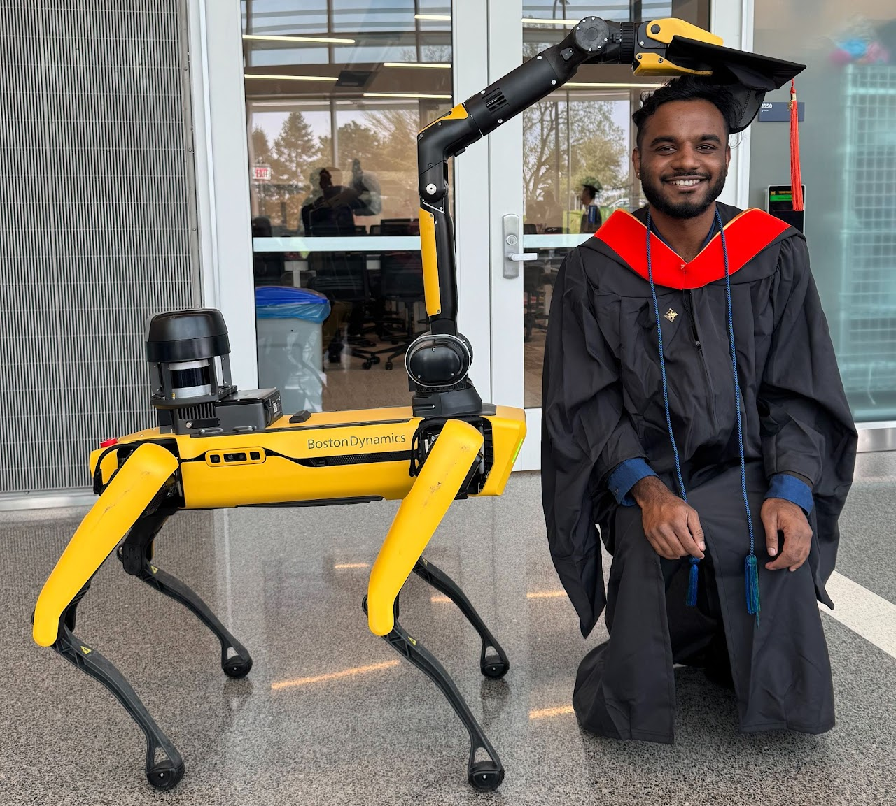
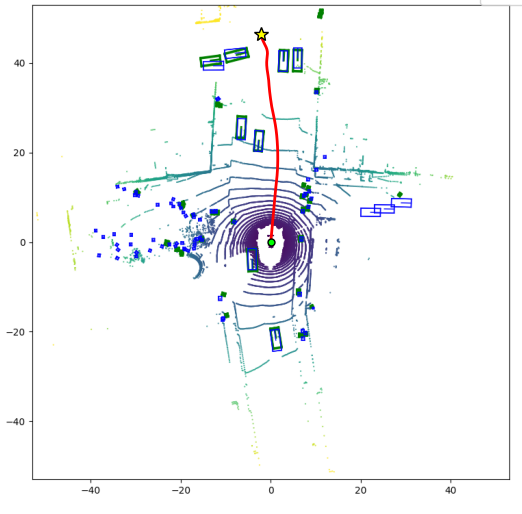
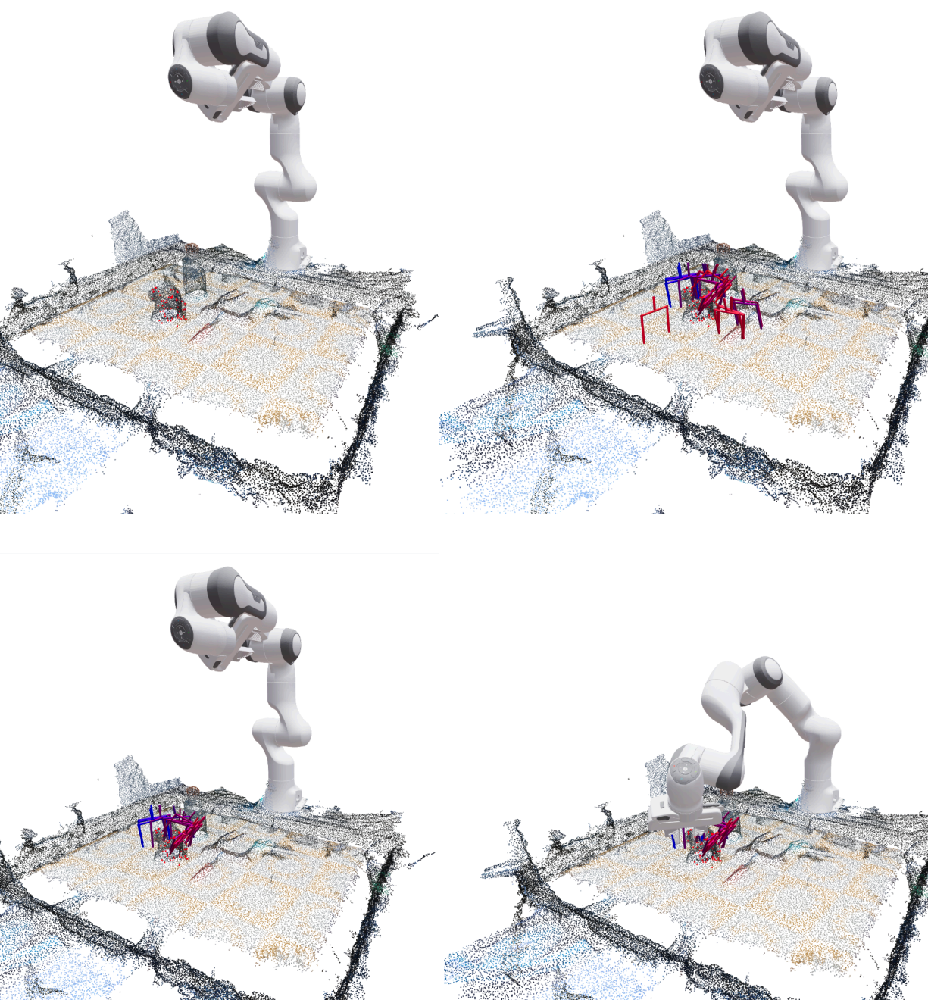
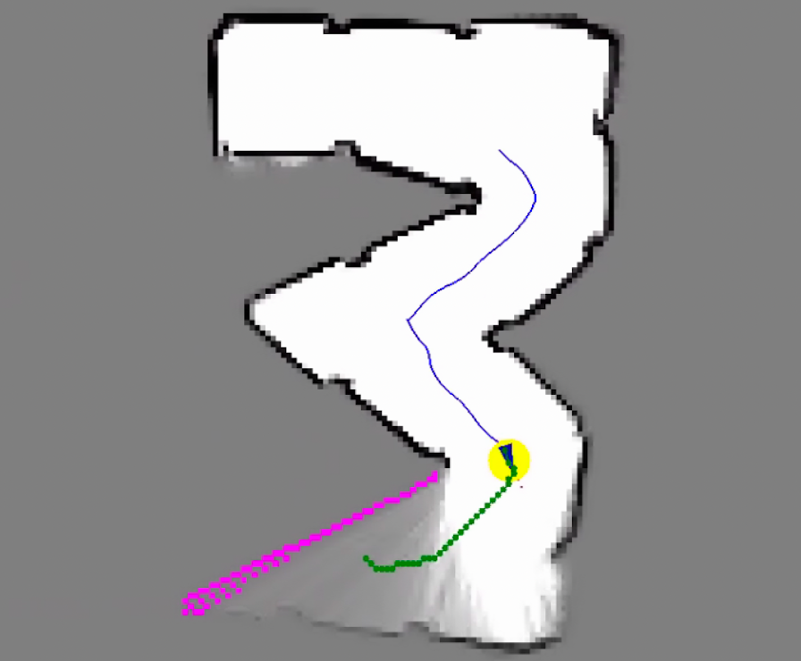
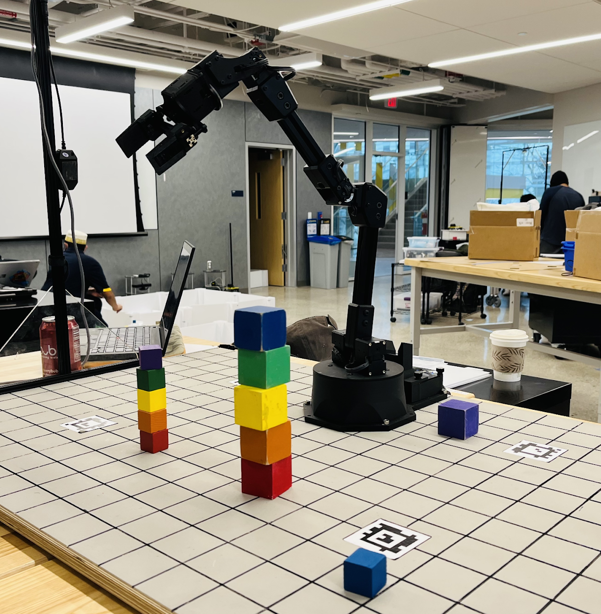
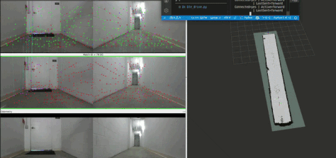
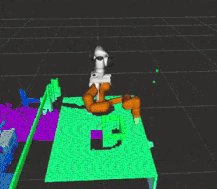
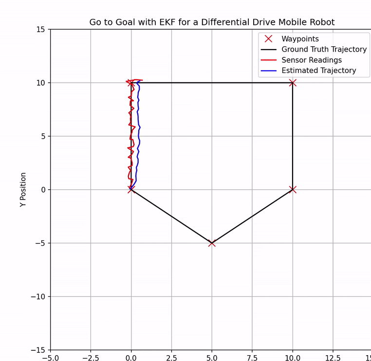
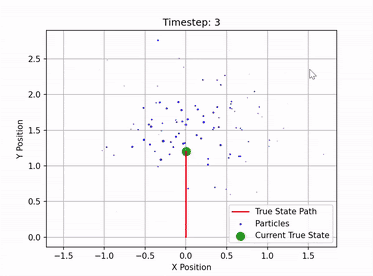

Pannaga Sudarshan
I am currently working as a Founding Robotics Engineer at Kovari Industries, building autonomous semi-humanoids! I graduated with a Masters in Robotics from the University of Michigan, Ann Arbor (GPA: 3.89/4.00) after finishing my bachelors in Electronics and Communication from JSS STU (CGPA: 9.54/10.00).
Previously, I was a Robotics Software Engineer at Avea Robotics, and a Researcher at the ARM Lab, ROAHM Lab, and Smart Manufacturing Lab at UMich, working on manipulation, imitation learning, and 3D scene understanding.
My areas of interest are 3D Robot Perception, Manipulation, SLAM, and Robot Learning.

Research

|
End-to-End Imitation Learning Pipeline for Bimanual Manipulation
Autonomous Robotic Manipulation (ARM) Lab Engineered an end-to-end data collection and imitation learning pipeline enabling bimanual KUKA iiwa robots to autonomously execute multi-step engine inspection workflows. Implemented data augmentation for multi-modal sensor data and diffusion models for domain randomization to improve sim-to-real transfer. Architected a modular ROS2 framework decoupling low-level robot control from high-level task logic. Tech Stack: Python, ROS2, Isaac Sim, Isaac Lab, PyTorch, Diffusion Policy, Docker |
|
Computing Object Wrench-Spaces from Visual Demonstrations
Robotics and Optimization for Analysis of Human Motion (ROAHM) Lab Vision-based approach to compute wrench spaces (forces/torques) from real-world demonstrations in cell manufacturing. Captures human-object interactions to estimate 6-DoF object poses for robot safety and generalization in manipulation tasks. Tech Stack: Python, OpenCV, Open3D, PyTorch, FoundationPose, WiLoR, Docker |
|
 |
Obstacle Aware Planning on BEVFormer Generated Environments with MPC-CBF
Integrated BEVFormer perception with Model Predictive Control and Control Barrier Functions for safe trajectory optimization. Contributions include computer vision extraction, obstacle detection transformation, ellipse bounding, and CBF integration. Tech Stack: Python, CasADi, PyTorch GitHub |
|
 |
VLM in Robot Manipulation for Synthetic Data: GraspSplats
Robotics and Optimization for Analysis of Human Motion (ROAHM) Lab Generated feature-enhanced Gaussian representations from RGB-D frames for natural language-based robotic manipulation queries. Built in PyBullet environment with Franka Emika FR3 manipulator and YCB dataset objects. Tech Stack: Python, OpenCV, Open3D, NumPy, PyTorch, 3DGS, Docker, Camera Calibration |
|
6D Pose Estimation and Grasping Experiments using KMR iiwa
Barton Research Group Implemented global registration + ICP pipeline with Microsoft Azure Kinect DK for 6D pose estimation. Integrated with GraspMixer grasp planning algorithm for parallel-jaw grippers. Tech Stack: Python, OpenCV, Open3D, NumPy, PyTorch, ROS, MoveIt, 6DoF Pose Estimation GitHub |
|
 
|
SLAM-based Autonomous Mobile Robot
Robotics Systems Lab Developed full-SLAM from scratch in C++ using MCL and occupancy grid mapping for a differential drive AMR. Fused wheel-encoders and IMU for robust localization using Gyrodometry & EKF. Implemented cascaded PID for low-level control, A* path planning for exploration, and real-time obstacle avoidance using 2D LiDAR. Tech Stack: C++, Python, ROS2, 2D LiDAR, RPi Camera, Jetson Nano |
|
 |
Grasping with Autonomous 5 DoF Manipulator
Robotics Systems Lab Developed novel algorithms for object manipulation (sorting, stacking/unstacking) for a 5 DoF ReactorX200 arm. Performed intrinsic & extrinsic camera calibration, classical CV techniques with Intel RealSense L515 for object detection. Implemented forward & inverse kinematics using DH and Newton-Raphson method. Tech Stack: C++, Python, OpenCV, ROS2, Intel RealSense |
Projects
|
 
|
SLAM & Autonomous Navigation for Semi-Humanoid Mobile Robot
Kovari Industries Architected full SLAM + navigation stack for an autonomous swerve drive semi-humanoid mobile robot. Built RTABMap-based 3D mapping with Nav2 (MPPI controller) for dynamic-obstacle aware navigation. Fused Visual-Inertial Odometry with wheel odometry using EKF for robust 6-DOF localization. Deployed at customer site for autonomous pick-and-place operations. Tech Stack: C++, Python, ROS2, RTABMap, Nav2, EKF, Docker |
|
 
|
Panda Arm Safe Motion Planning using MoveIt2
Robotic motion-planning pipeline for the Franka Emika Panda arm using ROS 2 Humble, MoveIt 2, and RViz2. Users define start/goal poses and insert static obstacles; generates collision-free trajectories using OMPL planners and FCL collision checking. Validated in Isaac Sim. Tech Stack: ROS2, MoveIt2, OMPL, FCL, Isaac Sim, C++ GitHub |
|
Pallet Detection and Ground Segmentation for Warehouse AMR
Computer vision system for industrial pallet detection optimized for edge deployment on NVIDIA Jetson devices. Uses YOLOv11 + TensorRT achieving 81.5% precision, 69.3% recall, and 40% inference time reduction on Jetson Orin Nano Super. Tech Stack: Python, YOLOv11, TensorRT, ROS2, Docker, Jetson Orin Nano GitHub |
|
 |
Sensor Fusion using Bayesian State Estimation for Mobile Robots
Real-time state estimation fusing noisy sensor data through Extended and Linear Kalman Filters. Custom ROS2 nodes in C++ with Eigen, featuring RViz2 trajectory visualization. Tech Stack: C++, Eigen, ROS2, RViz2 GitHub |
|
 |
Monte Carlo Localization for Differential Drive Mobile Robot
Particle filter implementation in C++ for robust state estimation. Uses sequential importance resampling with dynamic noise modeling and systematic resampling for accurate localization. Tech Stack: C++, Eigen GitHub |
Experience
C++, Python, Sensor Fusion, Nav2, MoveIt2, RTABMap, Docker, Robot Learning
Deployed autonomous swerve drive semi-humanoid mobile robot at customer site. Architected SLAM + navigation stack using RTABMap & Nav2 (MPPI) with dynamic-obstacle aware navigation. Fused Visual-Inertial Odometry with wheel odometry using EKF for robust 6-DOF localization. Developed grasp filtering and ranking, improving pick-and-place reliability by 15%.
Python, PyTorch, Isaac Sim, MoveIt2, ROS2, NVBlox
Developed VR pass-through teleoperation framework for bimanual SO101 arms with < 34 ms closed-loop latency. Engineered dynamic 3D reconstruction pipeline using NVBlox for real-time spatial awareness. Deployed VR-integrated teleoperation for bimanual Franka Panda robots in Isaac Sim.
Python, ROS2, Isaac Sim, Isaac Lab, Docker, Diffusion Policy
Engineered end-to-end data collection and imitation learning pipeline enabling bimanual KUKA iiwa robots to autonomously execute multi-step engine inspection workflows. Architected modular ROS2 communication framework decoupling low-level robot control from high-level task logic. Implemented data augmentation and diffusion models for improving sim-to-real transfer.
Python, OpenCV, Open3D, NumPy, PyTorch, 3DGS, Docker, Camera Calibration
Integrated 3D Gaussian Splatting with VLM for localizing objects in 3D scene. Adapted GraspSplats for high-quality 3D scene representation in open-vocab robotic grasping. Adapted FoundationPose & WiLoR for computing object wrench for automating cell manufacturing.
Python, OpenCV, Open3D, NumPy, PyTorch, ROS, MoveIt, 6DoF Pose Estimation
Developed multi-object 6DoF pose estimation using ICP & Global Registration. Performed intrinsic, extrinsic, & hand-eye calibration and motion planning using ROS & MoveIt. Deployed GraspMixer for optimal grasp pose selection on KuKA KMR iiwa robot.
Publications
IEEE DISCOVER, 2021 · pp. 253-258
★ Best Paper Award
paper
International Conference on Recent Trends in Science & Technology (ICRTST), 2020
paper
© Pannaga Sudarshan, 2025. Template inspired by Jon Barron.